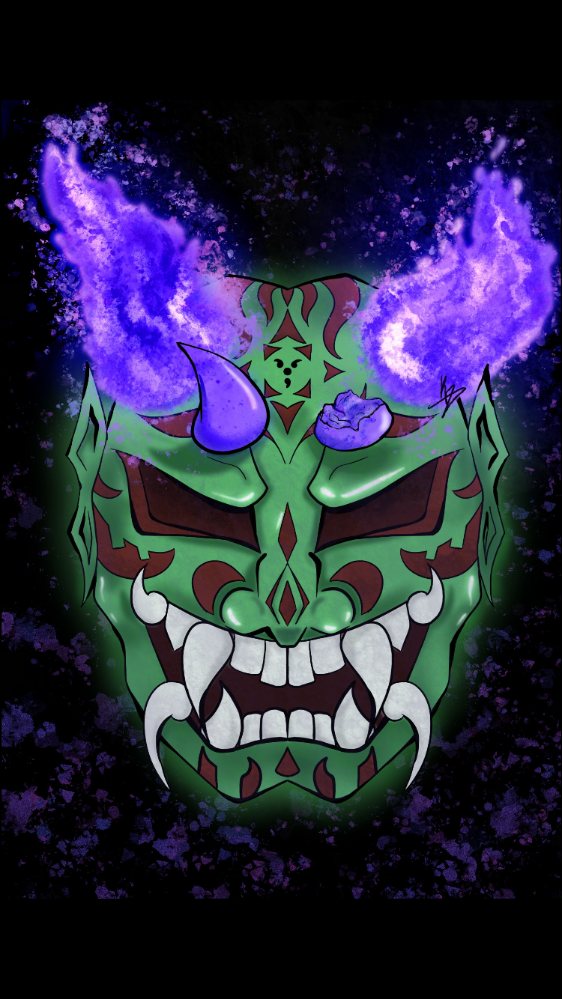

Chaos Oni Mask
This is a design inspired greatly by Japanese Oni masks. I wanted the piece to have a great amount of visual interest and have an almost sinister feel to the work. I achieved this by creating an exaggerated expression and adding in darker colors/shadows. I first sketched the design with paper and pencil to get an idea of the style of mask I desired then brought the sketch into procreate to begin the finished product.